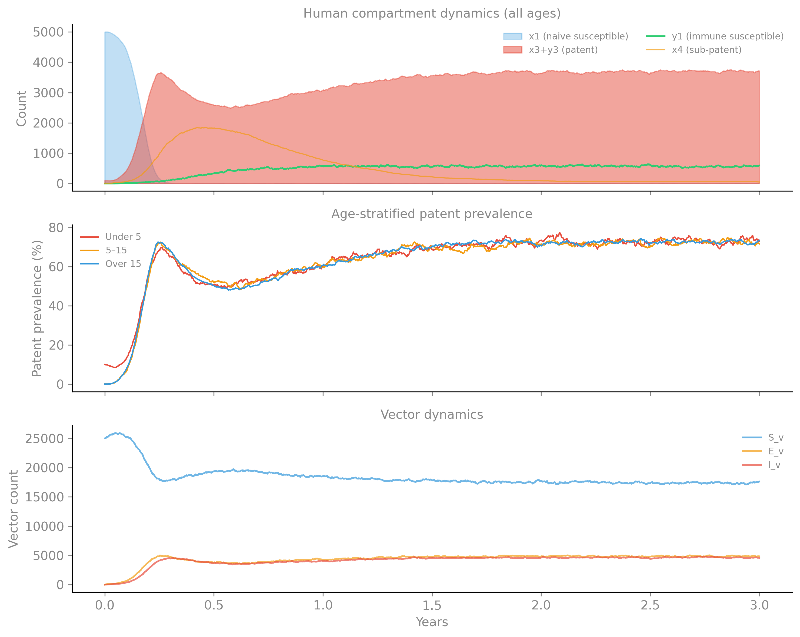
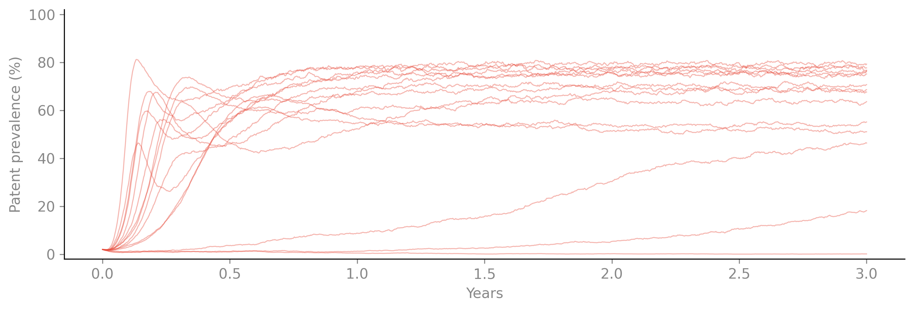
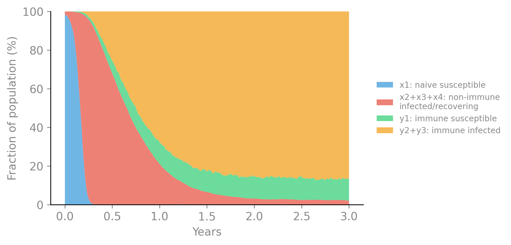

$ camdl inspect garki.camdl
garki
compartments 10 base × 3 age = 24 expanded
transitions 14 base → 30 expanded (+ 0 filtered by where)
parameters 17 declared (9 rate, 4 probability, 4 count)
tables 1 (age_frac: age)
let bindings 7 (H[g in age], H_total, M, I_patent[g in age], I_patent_total, lambda_h, lambda_v)
dimensions age = [under5, age_5_15, over15]
observations 1 streams
interventions 0 (0 active by default)The Garki Model: Immunity and Superinfection
This vignette implements the Garki malaria model (Dietz, Molineaux & Thomas 1974) — the first comprehensive mathematical model of malaria transmission, developed from longitudinal data collected in Garki District, northern Nigeria. The model distinguishes patent (microscopy-positive) from sub-patent infection, and non-immune from immune hosts, producing a 7-compartment human model coupled to a Ross-Macdonald vector component.
The Garki model is historically significant: it was the first to formally model acquired immunity to malaria and its interaction with superinfection, and its parameter estimates informed WHO malaria control strategy for decades. It exercises camdl’s partial stratification (age structure on humans only, not vectors), multi-state immunity dynamics, and the full vector-host transmission machinery.
Model structure
The human population moves through seven states organized into two tracks — non-immune and immune:
Non-immune track: x1 → x2 → x3 → x4 ─→ y1
(first infection) (sus) (pre) (pat) (sub) ↓ (immunity acquired)
↓
Immune track: y1 → y2 → y3 → y1 ↓
(reinfection) (sus) (pre) (pat) ↓
↑ ↓
└── waning (slow) ──── x1- x1: susceptible, non-immune
- x2: pre-patent (infected, below microscopy detection)
- x3: patent (microscopy-positive, infectious to mosquitoes)
- x4: sub-patent, recovering (clearing parasites, developing immunity)
- y1: immune, susceptible to reinfection
- y2: immune, reinfected, pre-patent
- y3: immune, reinfected, patent
The vector component is standard Ross-Macdonald: S_v → E_v → I_v with constant recruitment. Humans are age-stratified (under-5, 5–15, over-15); vectors are not — using camdl’s partial stratification:
stratify(by = age, only = [x1, x2, x3, x4, y1, y2, y3])The model
garki/garki.camdl
# Garki malaria model (Dietz, Molineaux & Thomas 1974).
#
# The first comprehensive mathematical model of malaria transmission,
# developed from longitudinal data collected in Garki District, Nigeria.
# Distinguishes patent (microscopy-positive) from sub-patent infection,
# and non-immune from immune hosts — four parasitological states
# crossed with two immunity levels.
#
# Compartments (following DMT 1974 notation):
# x1: susceptible, non-immune
# x2: pre-patent, non-immune (infected, below detection)
# x3: patent, non-immune (microscopy-positive)
# x4: sub-patent, recovering (clearing, developing immunity)
# y1: immune, susceptible to reinfection
# y2: immune, reinfected pre-patent
# y3: immune, reinfected patent
#
# Vector component: Ross-Macdonald S_v / E_v / I_v with constant
# recruitment (births balance deaths).
#
# Age stratification: 3 groups (under-5, 5-15, over-15) with
# age-dependent immunity acquisition rates.
#
# References:
# Dietz K, Molineaux L, Thomas A (1974). A malaria model tested in
# the African savannah. Bull WHO 50: 347-357.
# Molineaux L, Gramiccia G (1980). The Garki Project. WHO, Geneva.
# Smith DL et al. (2012). PLoS Pathog 8(4): e1002588.
time_unit = 'days
# ── Compartments ────────────────────────────────────────────────────
compartments {
# Human states (DMT notation)
x1, x2, x3, x4, # non-immune track
y1, y2, y3, # immune track
# Vector states
S_v, E_v, I_v
}
# ── Dimensions ──────────────────────────────────────────────────────
dimensions {
age = [under5, age_5_15, over15]
}
# Only human compartments are age-stratified; vectors are not.
stratify(by = age, only = [x1, x2, x3, x4, y1, y2, y3])
# ── Parameters ──────────────────────────────────────────────────────
parameters {
# Mosquito biting and transmission
a : rate in [0.1, 1.0] # biting rate (bites/mosquito/day)
b_h : probability in [0.05, 0.8] # P(infection | infectious bite)
b_v : probability in [0.05, 0.5] # P(mosquito infection | bite on patent host)
mu_v : rate in [0.01, 0.3] # mosquito mortality
sigma_v : rate in [0.05, 0.5] # 1 / EIP
# Human progression rates
alpha1 : rate in [0.01, 0.5] # x2 → x3: pre-patent to patent
alpha2 : rate in [0.01, 0.5] # y2 → y3: immune pre-patent to patent
r1 : rate in [0.001, 0.1] # x3 → x4: patent clearance (non-immune)
r2 : rate in [0.001, 0.1] # y3 → y1: patent clearance (immune)
# Immunity dynamics
delta : rate in [0.001, 0.05] # x4 → y1: immunity acquisition
omega : rate in [0.0001, 0.01] # y1 → x1: immunity waning
# Observation
rho_sens : probability in [0.5, 1.0] # microscopy sensitivity
rho_spec : probability in [0.5, 1.0] # microscopy specificity
N_tested : count in [10, 1000]
# Population sizes
H0 : count in [100, 100000]
M0 : count in [100, 1000000]
# Initial conditions
x3_init : count in [1, 10000] # initial patent infections
}
# ── Tables ──────────────────────────────────────────────────────────
tables {
# Age distribution (fraction of H0 in each group)
age_frac : age = [0.18, 0.27, 0.55]
}
# ── Derived quantities ──────────────────────────────────────────────
let H[g in age] = x1[g] + x2[g] + x3[g] + x4[g] + y1[g] + y2[g] + y3[g]
let H_total = sum(g in age, H[g])
let M = S_v + E_v + I_v
# Infectious hosts: patent infections (x3 + y3) contribute to
# mosquito infection. Immune patents (y3) may have lower gametocyte
# density; we simplify to equal infectiousness here.
let I_patent[g in age] = x3[g] + y3[g]
let I_patent_total = sum(g in age, I_patent[g])
# Force of infection on humans (from infectious mosquitoes)
let lambda_h = a * b_h * I_v / H_total
# Force of infection on mosquitoes (from patent humans)
let lambda_v = a * b_v * I_patent_total / H_total
# ── Transitions ─────────────────────────────────────────────────────
transitions {
# ── Non-immune track ──────────────────────────────────────────────
# New infection: susceptible non-immune → pre-patent
infect_x[g in age] : x1[g] --> x2[g]
@ lambda_h * x1[g]
# Pre-patent → patent (parasites reach detectable density)
patent_x[g in age] : x2[g] --> x3[g]
@ alpha1 * x2[g]
# Patent clearance → sub-patent recovering
clear_x[g in age] : x3[g] --> x4[g]
@ r1 * x3[g]
# Sub-patent → immune (immunity develops during recovery)
immunize[g in age] : x4[g] --> y1[g]
@ delta * x4[g]
# ── Immune track ──────────────────────────────────────────────────
# Reinfection: immune susceptible → immune pre-patent
reinfect[g in age] : y1[g] --> y2[g]
@ lambda_h * y1[g]
# Immune pre-patent → immune patent
patent_y[g in age] : y2[g] --> y3[g]
@ alpha2 * y2[g]
# Immune patent clearance → back to immune susceptible
clear_y[g in age] : y3[g] --> y1[g]
@ r2 * y3[g]
# ── Immunity waning ───────────────────────────────────────────────
# Slow loss of immunity: immune → non-immune susceptible
wane[g in age] : y1[g] --> x1[g]
@ omega * y1[g]
# ── Vector dynamics (unstratified) ────────────────────────────────
# Mosquito infection from biting patent humans.
# lambda_v already includes the total patent prevalence across ages.
infect_v : S_v --> E_v
@ lambda_v * S_v
# Extrinsic incubation
eip : E_v --> I_v @ sigma_v * E_v
# Demographics: constant recruitment, all-compartment mortality
birth_v : --> S_v @ mu_v * M0
death_Sv : S_v --> @ mu_v * S_v
death_Ev : E_v --> @ mu_v * E_v
death_Iv : I_v --> @ mu_v * I_v
}
# ── Observations ────────────────────────────────────────────────────
observations {
# Weekly slide-positivity survey (all ages pooled).
# Patent = x3 + y3 across all age groups, detected by microscopy
# with imperfect sensitivity/specificity.
slide_positivity : {
projected = (x3 + y3) / H_total
every = 1 'weeks
likelihood = diagnostic_test(
base = binomial(n = N_tested, p = projected),
sens = rho_sens,
spec = rho_spec
)
}
}
# ── Initial conditions ──────────────────────────────────────────────
init {
x1[g in age] = H0 * age_frac[g]
x3[under5] = x3_init
S_v = M0
}
simulate {
from = 0 'days
to = 3 'years
}
scenarios {
baseline {
label = "Garki-like endemic (high transmission)"
set = {
# Mosquito parameters
a = 0.5
b_h = 0.3
b_v = 0.15
mu_v = 0.1
sigma_v = 0.1
# Human progression (DMT 1974 estimates)
alpha1 = 0.2 # ~5 day pre-patent (non-immune)
alpha2 = 0.1 # ~10 day pre-patent (immune, slower)
r1 = 0.01 # ~100 day patent duration (non-immune)
r2 = 0.02 # ~50 day patent duration (immune)
# Immunity
delta = 0.01 # ~100 days to develop immunity
omega = 0.001 # ~3 years immunity duration
# Observation
rho_sens = 0.85
rho_spec = 0.95
N_tested = 200
# Population
H0 = 5000
M0 = 25000 # m = M/H = 5
# Seeding
x3_init = 100
}
}
}10 base compartments × 3 age groups = 24 expanded (7 human × 3 ages + 3 vector unstratified). 14 transition templates → 30 expanded.
Forward simulation

The model reaches endemic equilibrium within ~6 months. At equilibrium, ~73% of the human population is in the patent state (x3 + y3) — consistent with holoendemic transmission settings like Garki district. The immune pool (y1) builds over the first year as individuals cycle through infection → recovery → immunity.
The age-stratified prevalence panel shows all three age groups converging to similar equilibrium levels, because the model currently uses the same force of infection for all ages. In the original Garki data, younger children had higher prevalence (less acquired immunity) — adding age-dependent immunity parameters would reproduce this.
Prior predictive check

Immunity dynamics
The distinctive feature of the Garki model is the immunity cycle. The plot below tracks the flow of individuals through the non-immune and immune tracks over time:

Features exercised
| Feature | Usage |
|---|---|
| Partial stratification | stratify(by = age, only = [x1..y3]) — humans age-stratified, vectors not |
| 7-state immunity model | Non-immune → immune tracks with waning |
| Multi-species dynamics | Coupled human-vector transmission |
let with cross-compartment sums |
I_patent_total, H_total, lambda_h, lambda_v |
| Parameterized age table | age_frac : age = [0.18, 0.27, 0.55] |
| Inflow/outflow transitions | Mosquito birth/death maintaining constant M |
TipArithmetic projections in observations
The Garki observable — total patent prevalence across both immunity tracks — is expressed as a direct arithmetic expression in the projected field:
slide_positivity : {
projected = (x3 + y3) / H_total
every = 1 'weeks
likelihood = diagnostic_test(
base = binomial(n = N_tested, p = projected),
sens = rho_sens, spec = rho_spec
)
}prevalence(X) and incidence(T) are sugar for the common single-compartment/transition case. When the observable is a composite — a sum, ratio, or scaled combination of compartments — you write the arithmetic directly. The compiler emits it as a DerivedExpr projection, evaluated at each observation time against the current state. Combined with diagnostic_test for imperfect microscopy, the observation block reads like the survey protocol.